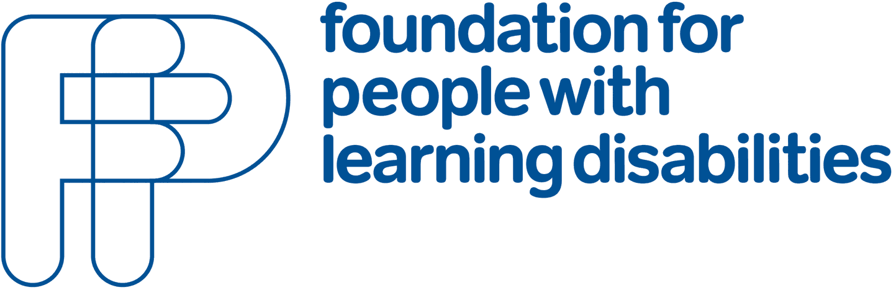

<!doctype html>
<!--[if lt IE 7]>      <html class="no-js lt-ie9 lt-ie8 lt-ie7"> <![endif]-->
<!--[if IE 7]>         <html class="no-js lt-ie9 lt-ie8"> <![endif]-->
<!--[if IE 8]>         <html class="no-js lt-ie9"> <![endif]-->
<!--[if gt IE 8]><!--> <html class="no-js"> <!--<![endif]-->
	<head>
		<meta charset="utf-8">
		<meta http-equiv="X-UA-Compatible" content="IE=edge">
		<title>Indirect Payments - Practitioner Guide</title>
		<meta name="description" content="">
		<meta name="viewport" content="width=device-width">
		<!-- <meta name="apple-itunes-app" content="app-id=377382255"> -->
		<link rel="shortcut icon" href="favicon.ico">
		<link rel="icon" href="favicon.ico">
		<link rel="stylesheet" href="styles/ec7ba3f4.main.css">
		<script src="scripts/vendor/f7f27360.modernizr.js"></script>
	</head>
	<body>

		<div id="controls">
			<button type="button" id="back" title="back" disabled="disabled" aria-label="go back"> <span class="a11y-hide">go back</span></button>
			<button type="button" id="home" title="back to start" aria-label="go home"> <span class="a11y-hide">go home</span></button>
			<a href="#sideNav" id="menu"> <span>menu</span></a>
		</div>

		<div class="snap-drawers">
			<div class="snap-drawer snap-drawer-left">
				<nav role="navigation" id="sideNav" tabindex="-1">
					<h2 class="a11y-hide">Menu</h2>
					<ul id="sideNavUl">
						<li><a href="#introduction">Introduction</a></li>
						<li><a href="#does-the-person-have-mental-capacity-to-consent-to-a-direct-payment-2">Does the person have mental capacity to consent to a direct payment?</a></li>
						<li><a href="#making-a-best-interests-decision-about-using-an-indirect-payment">Making a ‘best interests’ decision about using an indirect payment</a></li>
						<li><a href="#identifying-an-authorised-person">Identifying an ‘authorised person’</a></li>
						<li><a href="#managing-an-indirect-payment">Managing an indirect payment</a></li>
						<li><a href="#monitoring-and-reviewing-an-indirect-payment">Monitoring and reviewing an indirect payment</a></li>
						<li><a href="#ending-an-indirect-payment">Ending an indirect payment</a></li>
						<li><a href="#case-studies">Case Studies</a></li>
						<li><a href="#glossary-of-terms">Glossary of terms</a></li>
						<li><a href="#about-this-guide">About this Guide</a></li>
					</ul>
				</nav>
			</div>
			<div class="snap-drawer snap-drawer-right" id="definitions">
				<div id="sticky"></div>
			</div>
		</div>

		<div id="content" role="main" class="snap-content">
			<header>
				
				
				<h1>Indirect Payments: Practitioners' Guide</h1>
			</header>
			<div id="container">
				<section><h2 id="introduction">Introduction</h2><p>Since 2009 it has been possible for someone to receive a direct payment even if they lack the mental capacity to consent to it. The Care Act 2014 sets out new rules for direct payments. These are explained in statutory guidance that was published by the Department of Health in 2014. This replaces the previous guidance published by the Department of Health in 2009. It says that a local authority (or ‘council’) must provide a direct payment to someone who requests one and who meets the conditions set out in the Act and its Regulations. The council also has a duty to consider making a direct payment to people who lack capacity to request one themselves. This is often informally referred to as an <strong>&#8216;indirect payment&#8217;</strong>.</p>
<p>For this to happen, the council must establish that although the person lacks capacity to consent to receive a direct payment, it is nevertheless in their best interests to receive assistance in this way <strong>and</strong> that there is an ‘authorised person’ to make the request on their behalf.</p>
<p>Because the use of indirect payments relies on establishing that someone lacks mental capacity to request a direct payment, it is important that social care practitioners have a good understanding of the Mental Capacity Act and the Mental Capacity Act Code of Practice.</p>
<p>The Care and Support Act Statutory Guidance, which sets out how the Care Act should be implemented, says that social care practitioners need to understand their responsibilities for ensuring that people who lack capacity to make certain decisions about their lives are able to take advantage of the full range of options for receiving care and support, including direct payments. This guide is designed to help social care practitioners work through the process of considering an indirect payment as a way of doing this. The sections listed below give practical hints and tips about the key stages in the process.</p>
<p>The guide is intended to complement <a title="Care Act Statutory Guidance" href="https://www.gov.uk/government/publications/care-act-2014-statutory-guidance-for-implementation" target="_blank">the official guidance</a> about the use of direct payments in social care issued by the Department of Health.</p>
<figure>Direct Payments and the Care Act 2014</p>
<p>The Care Act 2014 provides, for the first time, a single legal framework for assessing the care and support needs of an individual, planning how best to meet those needs and how their care and support is to be paid for. The local authority has a duty to assess the capacity of the person with care needs to take part in each stage of this process, including the key decision about whether or not to use direct payments.</p>
<p>Sections 31-33 of the Act consolidate the existing legislation on direct payments. People with capacity can request a direct payment, and where they meet the conditions set out in this section the local authority must provide direct payments to meet their assessed eligible needs.</p>
<p>Section 32 requires local authorities to make (in)direct payments to an authorised person on behalf of someone who lacks capacity to request this themselves, provided five conditions set out in the section are met.</p>
<p>Section 33 allows for the publication of Regulations (The Care and Support (Direct Payments) Regulations 2014) which along with Chapter 12 of the Care and Support Statutory Guidance, replace the 2009 guidance on direct payments for people who lack capacity.</p>
</figure>
<div class="checklist"><button type="button">Checklist for practitioners</button>
<div>
<ul>
<li>Are you satisfied that the person is eligible for support from the council?</li>
<li>Have the person’s needs been assessed using the council’s official process?</li>
<li>Has this information been shared with the person, and family and friends supporting or caring for them?</li>
<li>Have you established whether a council-managed personal budget or a direct payment is the preferred option for purchasing the care and support?</li>
<li>Have you explained what personal budgets and direct payments are with the person and their family/friends?</li>
</ul>
</div>
</div>
</section>
				<section><h2 id="does-the-person-have-mental-capacity-to-consent-to-a-direct-payment-2">Does the person have mental capacity to consent to a direct payment?</h2><p>As a practitioner it is your responsibility to establish whether the person with care needs has the mental capacity to request a direct payment. The Mental Capacity Act (MCA) says that you can only assess a person’s capacity to make <em>a specific decision at the time that it needs to be made.</em></p>
<p>The decision about whether or not to opt for a direct payment forms part of broader discussion about the person’s eligibility for support, their care needs and how best to meet those needs. The guidance says that most requests to receive direct payments will occur during the care planning stage as this is when the local authority must inform the person of the needs that could be met via direct payments.</p>
<p>You will already have considered whether or not the person has ‘substantial difficulty’ in being involved in this broader discussion and therefore requires the support of other people, including an independent advocate where necessary. In doing so it may help to consider the extent to which they understand that:</p>
<ul>
<li>They need care or support</li>
<li>Their care or support has to be paid for</li>
<li>There are different ways to get care or support</li>
<li>They can choose who will support them</li>
<li>If they choose their own support, they will be responsible for paying for it.</li>
</ul>
<p>From this you may also have formed an opinion about the person’s capacity to make the request for a direct payment based on information already gathered during an eligibility assessment and the care planning process. In some situations a person may have capacity to make a request for a direct payment but you may have concerns that they lack capacity to make some decisions about managing the money in relation to their care and support. In these situations it may be appropriate to discuss with the person about them having a ‘nominated’ person to help them manage the direct payment (see box below).</p>
<p>However, you should be clear in your own mind, and with other people involved, that you have made a separate assessment of the person’s capacity to request a direct payment, at the point at which the request needs to be made.</p>
<figure>It is important not to confuse a person’s capacity to request a direct payment and their capacity to manage it. Someone may be able to decide to have a direct payment, but not be able to make decisions to arrange their support or do the paperwork associated with it. In this situation they could still have a direct payment and get help with the practical tasks of managing it by nominating an individual or an organisation to do this for them (known as the ‘nominated person’). With the agreement of the person with the care and support needs, the direct payment could be made to the nominated person. This is not the same as an ‘indirect payment’ for a person who lacks capacity to request a direct payment.</figure>
<p><strong>Assessing capacity</strong></p>
<p>In most instances, as practitioner, you should be able to assess the person’s mental capacity yourself, taking advice and information from people who know the person well. In some more complex situations you may need specialist help from a psychiatrist, psychologist or other specialist clinician, therapist or social care practitioner.</p>
<p>The test of capacity requires you to establish that:</p>
<ul>
<li>The person is not simply making an unwise decision, which the MCA clearly states is not proof in its own right of a lack of capacity;</li>
<li>The person has an impairment of the mind or brain, or some sort of disturbance affecting the way their mind or brain works (either temporary or permanent) which is the cause of their inability to make the decision, such as:
<ul>
<li>A mental illness</li>
<li>A dementia</li>
<li>A learning disability</li>
<li>The symptoms of alcohol or drug abuse</li>
<li>Delirium</li>
<li>Confusion, drowsiness or loss of consciousness</li>
<li>Concussion following a head injury.</li>
</ul>
</li>
<li>The person is unable to make the decision in question at the time it needs to be made using the four stage &#8216;Functional test of capacity&#8217;, after all practicable steps have been taken to help them do so without success.</li>
</ul>
<figure>The Mental Capacity Act Code of Practice gives detailed guidance about how to assess someone’s capacity to make a decision (see the useful links section for more information).</figure>
<p>Before starting the assessment, you should assume that the person does have the mental capacity to make the decision &#8211; this is an important principle that helps that people are treated fairly and not discriminated against on the basis of their disability, age, appearance or behaviour. You should also make sure that ‘all practicable steps’ are taken to help the person make the decision themselves. These might include:</p>
<ul>
<li>Involving people who know the person well</li>
<li>Giving the person information about the decision in the format they are most likely to understand</li>
<li>Communicating with them in ways they generally use</li>
<li>Visiting them more than once, in case their abilities change at different times</li>
<li>People need to be relaxed and as confident as possible, so they will need to be in the place they know, and probably with people they know.</li>
</ul>
<figure>Make sure that the person and their family have information about direct payments and the Mental Capacity Act. Hft’s Family Carers Support Service (a national charity) has an MCA resource specifically designed for family carers. The Foundation for People with Learning Disabilities has produced <a href="http://www.learningdisabilities.org.uk/our-work/family-friends-community/thinking-ahead/">‘Thinking Ahead’</a>, a guide to planning for the future of a loved one with a learning disability, in the event that their close relatives die before them.</figure>
<p>Getting these elements in place will frame the way that you establish the person’s capacity to make this decision.</p>
<p>You should also bear in mind that a key test of capacity laid out in the Mental Capacity Act is a person’s ability to communicate a decision. You will therefore need to be aware of how the person normally communicates when making your assessment.</p>
<figure>Although it may take time to prepare for an assessment of capacity, the assessment itself and any best interests decisions that follow can take place within existing person-centred planning meetings. This may allow you to consult with others regarding their views of the person’s mental capacity.</figure>
<p><strong>Recording the outcome</strong></p>
<p>Keep a record of how the assessment of capacity was carried out. It is good practice to keep a note of the steps you took to establish whether or not the person had capacity to request a direct payment. You should also write down the conclusions you came to and your reasons for your decision.</p>
<p>It may not always be possible to reach a conclusion about the person’s mental capacity and you may need to seek a second opinion if you are unsure about their capacity to make this decision, or someone (including the person) disagrees with your assessment. A second opinion may be sought from a colleague or manager, or someone with specialist skills such as a psychiatrist, psychologist, other specialist clinician, therapist or social care practitioner.</p>
<figure>You can audit your assessment of capacity using <a href="http://www.amcat.org.uk/">AMCAT an online tool</a> specifically designed to help practitioners improve the way they assess mental capacity.</figure>
<p>If you conclude that the person does have mental capacity to request a direct payment you will still need to have a conversation with them about the options available – for example, using a mix of council services and support that they arrange for themselves. They should also be given advice about the direct payment support services that are available locally.</p>
<p>If the person lacks mental capacity you will need to consider whether arranging their care and support through an indirect payment would be in their best interests and you need to identify an authorised person to make the request on their behalf.</p>
<figure>You should remind anyone acting as an authorised person that they only have authority to make certain decisions about the person’s care and support, and their financial affairs in relation to these, and that they should always consult with the person where it is practicable to do so. If they have reason to believe that the person is unable to make other decisions, they should assess the person’s capacity and follow a best interests process if necessary (although any decision about other financial matters needs to be authorised through a Lasting Power of Attorney or the Court of Protection).</figure>
<div class="checklist">
<p><button type="button">Checklist for practitioners</button></p>
<div>
<ul>
<li>Have you established that the person lacks the capacity to request a direct payment?</li>
<li>Have you carried out an assessment of capacity in accordance with the MCA and the MCA Code of Practice?</li>
<li>Have you recorded how the assessment of capacity was carried out and what the outcome was?</li>
</ul>
</div>
</div>
</section>
				<section><h2 id="making-a-best-interests-decision-about-using-an-indirect-payment">Making a ‘best interests’ decision about using an indirect payment</h2><p>The Care Act says that where the person in need of care and support has been assessed as lacking capacity to request a direct payment, an authorised person can request the direct payment on the person’s behalf. This is sometimes informally called an indirect payment. For this to happen, the local authority must be satisfied that it is in the best interests of the person with care needs to have a direct payment managed by someone else. </p>
<p>You can only make a best interests decision if you have established that the person lacks capacity to make the particular decision under consideration. If you have not already done so, you must ensure that an assessment of the person’s capacity has been carried out.</p>
<p>The best interests decision-maker is usually someone who is closely involved with the person at the time the decision needs to be made or who needs to act on behalf of the person who lacks capacity. In this situation, you will be the decision-maker because it is the council that has a duty to establish whether or not the person’s best interests will be served by using an indirect payment before it can agree to this happening.</p>
<figure>If there is someone with powers to make decisions about the person’s welfare, granted under a Lasting Power of Attorney or authority as a welfare deputy appointed by the Court of Protection, they will decide whether an indirect payment would be in the person’s best interests.</figure>
<p>When making a best interests decision you must follow the Mental Capacity Act Code of Practice. The Code sets out the responsibilities of decision-makers and offers useful guidance about the process of making a decision and acting in someone’s best interests.</p>
<figure>Is the person likely to regain capacity; for example, after receiving medical treatment? If so, you may be able to wait until the person is able to decide for themselves.</figure>
<p>[case_study number=&#8221;2&#8243;]</p>
<p><strong>What is a best interests decision? </strong></p>
<p>A decision or action that is taken in someone’s best interests must consider and take into account what the person may have decided for themselves, if they did have capacity.</p>
<p>The Mental Capacity Act Code of Practice sets out a best interests checklist that will help you make a judgement. The following are some of the things you should bear in mind when making a best interests decision about whether or not the person should have an indirect payment.</p>
<p>Avoid assumptions about the person’s best interests merely on the basis of their age or appearance, condition or any aspect of their behaviour. For example, do not assume that an indirect payment would not suit a person with a learning disability simply because no-one with a learning disability has ever had one in your local authority.</p>
<p>Consider all the circumstances relevant to the decision. In this situation a vital piece of information is whether there is a person who could fulfil the role of ‘authorised person’? This is someone, often a relative or family carer, who is willing, able and suitable to take on responsibility for managing the indirect payment and making decisions about how it will be spent.</p>
<p>You must be satisfied that the authorised person understands the role, is willing to take it on and will act in the person’s best interests (they may need information, advice and guidance)</p>
<p>In making the decision you should also consider alternative ways of meeting the person’s needs, other than an indirect payment. For example, there may be a council-run service that meets the person’s needs. You should also consider whether a mixture of support, funded through indirect payments and council provision would best meet the person’s needs.</p>
<p>[case_study number=&#8221;3&#8243;]</p>
<p>Where there is more than one option you must consider if there is a course of action that will be less restrictive of the person’s basic rights and freedom. This is not just about physical freedom. For example, living in a place that enables the person to maintain regular contact with family and friends may be the most important factor in establishing the option that is in their best interests.</p>
<p>Remember that although the person lacks capacity to make this decision, they may be able to make a significant contribution to the process by telling you about their likes and dislikes, feelings, beliefs and values. Other people may be able to tell you how best to communicate with the person and what the person has said about these things in the past.</p>
<p>[case_study number=&#8221;4&#8243;]</p>
<p>Consult with other people about what is likely to be in the person’s best interests. This will include anyone who already has formal decision-making powers on behalf of the person, as an appointee for welfare benefits, court-appointed deputies and attorneys appointed under a Lasting Power of Attorney (LPA), carers, close relatives and anyone else with a genuine and active interest in the person’s welfare.</p>
<figure>Remember to involve the person who lacks capacity and other people at all stages in the decision-making process. This will improve the quality of the final decision and the actions that flow from it (such as, appointing an authorised  person), as well as reducing the chances of disagreement.</figure>
<p>If people are to be properly involved in a best interests decision they will need good, clear information about how indirect payments work. You should feel confident about explaining this to them, but it is also worth finding out about information and support that you can guide them to.</p>
<p>A best interests process doesn’t always mean a formal meeting. Indeed meetings are often not  the best way of enabling the person to be involved in the process. It’s about consultation and conversation. For example, both an assessment of capacity and a best interests process can take place within existing person-centred planning meetings.</p>
<p>Whilst you as the social care practitioner will be the ultimate decision maker regarding an indirect payment (except where there is someone with authority under the Mental Capacity Act, such as an attorney or deputy), you should aim to reach a decision that is supported by everyone who will be involved in implementing it. Keep a record of the decision, how it was reached and any disagreements that have been expressed.</p>
<figure>Some young people under the age of 18 use direct payments that are managed by their parents. As they reach adulthood the council will need to consider with the young person and their family whether to continue using direct payments and, if they lack capacity to decide this, and whether it is in the person’s best interests to have an indirect payment.</figure>
<p>[case_study number=&#8221;5&#8243;]</p>
<figure>The <a href="http://www.bestinterests.org.uk/">BRIDGET online tool</a> allows you to audit a best interests decision that you have made.</figure>
<figure>You should remind anyone acting as an authorised person that they only have authority to make certain decisions about the person’s care and support, and financial matters in relation to this, and that they should always seek the person’s views where it is practicable to do so. If they have reason to believe that the person is unable to make other decisions, they should assess the person’s capacity and follow a best interests process if necessary (although any decision about other financial matters needs to be authorised through a Lasting Power of Attorney or the Court of Protection).</figure>
<div class="checklist"><button type="button" aria-expanded="false">Checklist for practitioners</button>
<div>
<ul>
<li>Has it been decided that it would be in the person’s best interests to have an “indirect” payment?</li>
<li>Have you followed the best interests process in accordance with the MCA and the MCA Code of Practice?</li>
<li>Is there someone who is suitable, willing and able to receive the indirect payment as the authorised person?</li>
<li>Have you made sure that there is no one else (such as a welfare attorney or deputy) who should be making this decision?</li>
<li>Have you involved all the relevant people in this decision?</li>
<li>Have you recorded how you carried out the best interests process and what was decided?</li>
</ul>
</div>
</div>
</section>
				<section><h2 id="identifying-an-authorised-person">Identifying an ‘authorised person’</h2><p>The Care Act says that councils should make direct payments to someone who lacks the where there is an appropriate and willing person to receive the direct payments on their behalf. This person is known as the ‘authorised person’. Prior to the Care Act coming into force they were known as the ‘suitable person’. From April 2014 the term ‘authorised person’ replaces ‘suitable person’.</p>
<figure><strong>‘Nominated’ person or ‘authorised’ person?</strong></p>
<p>The Care Act establishes two roles that allow someone to manage a direct payment on behalf of a person with care needs. Where the person with care needs <em>has</em> the capacity to request a direct payment from the local authority, he or she may choose to <strong>nominate</strong> someone to manage the direct payment on their behalf (who is called the ‘nominated person’). Where the person with care needs lacks capacity someone must be <strong>authorised</strong> to act on their behalf, in their best interests.</figure>
<p>[case_study number=&#8221;8&#8243;]</p>
<p>In the process of deciding whether it is in the best interests of the person to have an indirect payment, you are likely to have identified someone who could be an authorised person. Before the authorised person can request the indirect payment, you must establish that they meet all five of the conditions for the role set out in the Regulations. The guidance says that ‘failure to meet any of the conditions would result in the request being declined’ (para 12.17).</p>
<p><strong>Condition 1: where the person is not authorised under the Mental Capacity Act 2005 but there is at least one person who is so authorised, that person who is authorised supports the person’s request.</strong></p>
<p>You should check whether there is anyone with decision-making authority granted under the Mental Capacity Act, such as a court appointed deputy or an attorney appointed under a Lasting Power of Attorney (LPA).</p>
<p>[case_study number=&#8221;6&#8243;]</p>
<p>The decision to request an indirect payment is about the person’s welfare but not all deputies and attorneys will have the authority to make this type of decision. The following is a simple guide to these possible roles:</p>
<ol>
<li>An attorney or deputy for <em>welfare</em> has the authority to request or refuse an indirect payment even if your judgement is that it is in the person’s best interests to receive one; they are the authorised person provided they meet the other conditions (below) or they choose not to take on the role.</li>
<li>Where an attorney or deputy for <em>welfare</em> chooses not to take on the role of authorised person, for an indirect payment to be made, the agreement of the attorney or deputy must still be sought. </li>
<li>Where there is an attorney or deputy for <em>property and financial affairs</em>, they do not have the authority to request or refuse an indirect payment. However, you should consult with them before deciding whether having an indirect payment will be in the person’s best interests.</li>
<li>Any attorney or deputy (either for welfare or for property and affairs) should be considered first for the role of authorised person if they are willing and able to take on this role and are considered by you to be an appropriate person for it.</li>
</ol>
<p><strong>Condition 2: the local authority is not prohibited by regulations under section 33 from meeting the adult’s needs by making direct payments to the authorised person, and if regulations under that section give the local authority discretion to decide not to meet the adult’s needs by making direct payments to the authorised person, it does not exercise that discretion.</strong></p>
<p>This condition refers to the Care and Support (Direct Payments) Regulations 2014 which sets out situations where direct payments may not be made, whether or not the person with care needs lacks the capacity to request them. In relation to a request for an indirect payment made by an authorised person, there are three general prohibitions:</p>
<ol>
<li>A direct payment may not be paid to a close family member living in the same household to deliver personal care, although the local authority may agree to this in exceptional circumstances. However, the Regulations do allow part of the direct payment to be used for the administration and management of the direct payment by a close family member – this may be especially relevant where the direct payment is substantial and is used to meet complex care needs.</li>
<li>Direct payments may not be used to fund long-term residential care. However, they may be used to fund short-term stays (four weeks in any twelve month period) and direct payments may still be used by long-term residents to meet non-care related needs, for example, to try out independent living arrangements before making a commitment to moving out of their care home or to take part in day-time activities provided in the community.</li>
<li>Direct payments may not be made to people subject to a range of drug and alcohol treatment regimes listed in Schedule 1 of the Regulations.</li>
</ul>
<p><strong>Condition 3: the local authority is satisfied that the authorised person will act in the adult’s best interests in arranging for the provision of the care and support for which the direct payments under this section would be used.</strong></p>
<p>In addition to the best interests process described in the previous section, you should also ask if the authorised person has the “strongest incentive” to act in the best interests of the person with care needs by ensuring that the money is properly spent on the appropriate care and support identified in the care and support plan. </p>
<p>The authorised person will be taking on a role of trust, requiring them to display integrity both in the way they uphold the person’s best interests but also in the way they manage public money You must therefore consider their motivations in taking on the role and the extent to which they are best placed to understand and promote and protect the person’s best interests. For this reason a family member is often the most obvious choice for authorised person.</p>
<figure>You should be mindful of any potential conflicts of interest, family disagreements or family members feeling obliged to take on the role rather than freely agreeing to do so. As a social care practitioner you should ensure that there is no overt or subtle pressure placed upon anyone to become the authorised person.</figure>
<p>If there is no-one with these roles or no-one that is willing to take on the role of the authorised person, then others could be considered including a professional such as an independent broker, advocate or solicitor. It is important to note that if the authorised person is not a family member or close friend, they will need to have a Disclosure and Barring Service (DBS) check.</p>
<p><strong>Condition 4: the local authority is satisfied that the authorised person is capable of managing the direct payment by himself or herself, or with whatever help the authority thinks the authorised person will be able to access.</strong></p>
<p>The following questions may help you decide whether this condition is met.</p>
<p><em>Do they have the necessary advice about what the role entails to consent to act as the authorised person?</em> You should be able to explain to anyone considering the role what it will entail. You can use the section ‘making it work’ to get more detail about the expectations placed upon an authorised person. In particular, they will need to understand their responsibilities under the Mental Capacity Act. </p>
<p><em>Are they willing to act as the authorised person without feeling pressured into to doing so?</em> Research suggests that family members sometimes feel an obligation to become the authorised person. This may stem from expectations held by the person who lacks capacity, other family members or from professionals. The potential authorised person may also experience other demands such as care commitments or holding down a job. It is therefore important to talk these things through with everyone involved, identify the support available to the authorised person, and agree the best way forward.</p>
<p><em>Are they capable of managing the indirect payment? </em>Having given the potential authorised person information about the role, you will need to make a judgement about whether they are capable of undertaking it. Remember that the general rule about managing direct payments applies; an authorised person may be able to agree to receive the direct payment, but choose to get help managing it for them from a direct payments support service, for example.</p>
<p><em>Have they agreed to meet the responsibilities of taking on the role and understand the consequences of not doing so? </em>The authorised person needs to understand that the indirect payment will be subject to a legal agreement between themselves and the council and place obligations on them under the Mental Capacity Act. </p>
<p>Each council should have a standard agreement which may include the following responsibilities:</p>
<ul>
<li>To understand and follow good practice in making decisions on behalf of someone who lacks capacity and to act in their ‘best interests’ in compliance with the Mental Capacity Act.</li>
<li>To consult with and involve the person as far as is practicable in making decisions about their care and support and use of the indirect payment.</li>
<li>Help the person maintain as much control and independence as possible.</li>
<li>To consult with people who are close to the person and others, such as health and social care professionals, where this is appropriate.</li>
<li>To use the indirect payment to meet the needs of the person and achieve the outcomes agreed with the council, as described on the care and support plan.</li>
<li>If employing staff to provide services, to act lawfully as an employer.</li>
<li>To inform the council if the person regains mental capacity to request a direct payment managed directly by themselves.</li>
</ul>
<p>The authorised person should know that they can give up the role. Plans should be made to address this possibility and what might happen in the event of the authorised person not being able to fulfil the role temporarily, perhaps because of illness.</p>
<p><strong>Condition 5: the local authority is satisfied that making direct payments to the authorised person is an appropriate way to meet the needs described on the care and support plan.</strong></p>
<p>Your judgement about this condition should flow naturally from the outcome of the best interests process described earlier. </p>
<p><strong>Mental Capacity Act responsibilities</strong></p>
<p>It is vital that the authorised person has information about the MCA and understands their responsibilities under the MCA. It is quite possible that the authorised person may never have heard of the MCA so it will be important to provide them with information about it that has been written for family carers. They will need to know what best interests decisions are and how to make them. They will also need to know that in the role of authorised person does not mean that they make all the decisions for the person – the person receiving care and support may be able to make many decisions themselves and where they can, these must be respected. The authorised person will therefore also need to be able to give the person help in making decisions where necessary, understand that an unwise decision does not mean the person lacks capacity to make the decision, and be able to assess the person’s capacity to make decisions.</p>
<div class="checklist"><button type="button" aria-expanded="false">Checklist for practitioners</button>
<div>
<ul>
<li>Have you identified someone to act as the ‘authorised person’ to receive the indirect payment on the person’s behalf?</li>
<li>Are you satisfied the authorised person meets the conditions set out in the Regulations?</li>
<li>Has the authorised person signed an agreement with the council about their responsibilities?</li>
<li>Does the authorised person have information and understand their responsibilities in relation to the MCA?</li>
</ul>
</div>
</div>
</section>
				<section><h2 id="managing-an-indirect-payment">Managing an indirect payment</h2><p>The authorised person will be responsible for arranging the services and support detailed in the person’s support plan. However, as a practitioner, you should discuss what support may be available to help them do this, such as a support brokerage service or through a local direct payments support service.</p>
<figure><a href="http://www.nationalbrokeragenetwork.org.uk/choose-a-broker/">The National Brokerage Network website</a> allows you to search for support brokerage services in your area.</figure>
<p>Many Direct Payments Support Services are contracted by local councils from independent organisations to provide support and advice to people using direct payments. The services offered vary, but are likely to include:</p>
<ul>
<li>Recruitment of staff</li>
<li>Employer responsibilities towards personal assistants (PAs)</li>
<li>Keeping accounts of how money is spent</li>
<li>Sorting out payments to PAs and services</li>
</ul>
<p>The guidance on direct payments notes that ‘support provided through voluntary organisations and user-led organisations has been shown to be particularly effective and valued by recipients… The experience of existing recipients of direct payments is that they find it easier to seek advice from someone who is independent of their local council’.</p>
<figure>Centres for Independent Living (CILs) can help authorised persons consider their options and find out about the support that will be available to them. Many CILs provide the local Direct Payment Support Service. You can find out more about CILs including those available in your area from the <a href="http://www.ncil.org/">National Centre for Independent Living website</a>.</figure>
<p>The Care and Support (Direct Payments) Regulations 2014 maintains the prohibition on paying a family member living in the same household to provide care, but it does allow for the use of the direct payment to pay for the ‘administration/management’ of a large payment since<em> “organising care and support can be a complex and time consuming task. This allows family members performing this task to be paid a proportion of the direct payment, similar to what many direct payment holders pay to third-party support organisations, as long as the local authority allows this” (Care and Support Statutory Guidance, para 12.36).</em></p>
<p>The arrangement for indirect payments will be set out in an agreement between the council and the authorised person, acting on behalf of the person who lacks capacity. The agreement forms a legal contract.</p>
<p>An indirect payment may only be used to purchase support that has been agreed with the council and set out in the person’s support plan. Make sure that the authorised person understands what is in the support plan and how this should be used to guide their decision-making.</p>
<figure>Direct (and indirect payments) are designed to be used flexibly to support people to live independently. They may be used to purchase services or equipment and other individual items. They may not be used to purchase services provided by the council and may not be used to purchase residential care other than for short-term respite breaks.</figure>
<p>All decisions about the use of the indirect payment made by the authorised person must follow a best interests process. This means that they should include the person being supported to indicate their preferences and choices as much as possible.</p>
<p>The authorised person should be given good, clear information about what the possible choices for purchasing the person’s support, such as employing a personal assistant or using a care agency.</p>
<p>Remind the authorised person that if they employ staff they must work within employment legislation. You should ensure that they have the right support and advice to be a good employer. The <a href="http://www.ncil.org/">local Direct Payments Support Service</a> should be able to offer this.</p>
<p>An indirect payment cannot usually be used to employ a spouse, partner or a close relative who lives in the same household as the person receiving care although the council can waive these restrictions in exceptional circumstances. Close relatives who live elsewhere can be employed, however.</p>
<p>Anyone who is not a family member or friend employed to provide support to the person who lacks capacity must have a Disclosure and Barring Service (DBS) check. While there is no requirement to carry out a DBS check on family members or close friends employed to provide support, you should remind the authorised person that the option of carrying out a DBS check is open to them.</p>
<p>Remind the authorised person that if they are using a service provider, such as a care agency, they will need to:<br />
1. Check the quality and credentials of the service. They should check that the provider is of sufficient quality and registered to provide personal care. This can be done through the <a href="http://www.cqc.org.uk/">Care Quality Commission website</a>.</p>
<p>You can help by putting them in touch with other people who have used that service or by asking your commissioning team for any local information about the provider.</p>
<p>2. Be aware of any obligations and terms and conditions that are stipulated in the contract.<br />
The authorised person will need to keep records of how the direct payment has been spent and share these with the council when asked. These will include:</p>
<ul>
<li>Bank statements,</li>
<li>Records of expenditure on staff (hours worked and payments made as well as the payments to the Inland Revenue)</li>
<li>Any agency invoices and receipts (if applicable)</li>
<li>Receipts for one-off payments or cash payments over a specified amount for items or services identified in the person’s support plan.</li>
</ul>
<p>Make sure there are contingency arrangements in place in case anything goes wrong, including what will happen if the authorised person is unable to continue in the role. Examples of contingency plans that people who receive direct payments might make include making arrangements with independent agencies for emergency cover, or recruiting personal assistants who are prepared to work additional shifts at short notice when necessary. However, it remains possible that difficulties will arise that have not been anticipated and that cannot be covered by the arrangements the individual has made. In these circumstances, the direct payment recipient should know that they can contact a named individual in the council or support service for help.</p>
<p>The authorised person will be expected to attend reviews of the person’s needs, and give information on how the indirect payment has been working.</p>
<p>The authorised person should be aware of the council’s procedures for adult safeguarding. Make sure the authorised person knows what to do to keep the person safe and how to respond to evidence that they have been abused or neglected.</p>
<div class="checklist"><button type="button" aria-expanded="false">Checklist for practioners</button>
<div>
<ul>
<li>Have you ensured that arrangements in place to manage the indirect payment?</li>
<li>Have you explored with the authorised person what help they need to manage the indirect payment?</li>
<li>Is there a support plan in place that says how the person’s needs are to be met?</li>
<li>Does the authorised person have a copy of the support plan?</li>
</ul>
</div>
</div>
</section>
				<section><h2 id="monitoring-and-reviewing-an-indirect-payment">Monitoring and reviewing an indirect payment</h2><p>The council remains responsible for continuing assessment and review to ensure that the person’s assessed needs for services and the objectives set out in their support plan continue to be met by indirect payments. In addition, the authorised person must account to the council for the way that the indirect payments are spent.</p>
<p>Although formal reviews of the indirect payments must be carried out at agreed intervals, you should ensure that the authorised person understands how to alert the council between reviews if:</p>
<ul>
<li>The person’s needs change;</li>
<li>The person regains capacity to request (or refuse) the direct payment for themselves;</li>
<li>The indirect payment ceases to be the best way of meeting the person’s needs;</li>
<li>Or the authorised person is no longer able or willing to manage the indirect payment.</li>
</ul>
<p>Because the person receiving care and support lacks mental capacity to request the direct payments and it was decided that an indirect payment was in the person’s best interests, you have an additional responsibility to ensure that this continues to be the case. </p>
<p>The authorised person will need to keep records of how the direct payment has been spent and share these with the council’s finance department. These will include:</p>
<ul>
<li>Bank statements</li>
<li>Records of expenditure on staff (hours worked and payments made as well as the payments to the Inland Revenue)</li>
<li>Any agency invoices and receipts (if applicable)</li>
<li>Receipts for one-off payments or cash payments over a specified amount for items or services identified in the person’s support plan.</li>
<li>In many cases the authorised person will be assisted in managing the finances by a <a href="http://www.ncil.org/">local Direct Payments Support Service</a>.</li>
<ul>
<em>“The Care and Support (Direct Payments) Regulations 2014 set out that the local authority must review the making of direct payments initially within six months, and thereafter every 12 months, and must not require information to be provided more often and in more detail than is reasonably required for the purpose of enabling the authority to know that making direct payment is still an appropriate way of meeting the needs, and that conditions upon which it is made are met. Local authorities should not design systems that place a disproportionate reporting burden upon the individual.” (Care and Support Statutory Guidance, para 12.24) </em></p>
<p>The authorised person will be expected to attend reviews of the person’s needs, and give information on how the indirect payment has been working. However, the information that the authorised person is asked to provide for a review should be straightforward and the least onerous possible, consistent with monitoring requirements.</p>
<figure>A review does not need to be a formal event: it may happen during a regular planning meeting or gathering of the person’s circle of support.</figure>
<figure>Check that the authorised person is acting in a way that is consistent with the Mental Capacity Act. This includes seeking the views of the person and others when making best interests decisions related to the management of the indirect payment. Check that they are not making decisions that do not fall within their remit without first applying the principles of the Act.</figure>
<p>Prepare and share as much information as possible beforehand. Think about how the person who is being supported by the indirect payment can best be involved and what help they may need.</p>
<p>Each review will differ, but you should use it to consider the following questions:</p>
<ul>
<li>Have the person’s assessed needs changed significantly?</li>
<li>Has the person’s capacity to decide about the indirect payment changed?</li>
<li>Is it still in the person’s best interests to have an indirect payment to meet the person’s needs and promote and protect their well being? </li>
<li>Is the indirect payment being used to meet the person’s needs and achieve the outcomes in their support plan?</li>
<li>Is the authorised person still able and willing to carry out the role?</li>
<li>Does the authorised person require additional support to carry out the role?</li>
</ul>
<p>It is important to record the outcomes of the review and any disagreements that have arisen. </p>
<p>Possible outcomes will include:</p>
<ul>
<li>Agreement for the arrangements to continue as before;</li>
<li>Alterations to the person’s support plan which may or may not require approval from the council;</li>
<li>A new assessment of the person’s needs,  mental capacity or best interests;</li>
<li>Further support being sought for the authorised person;</li>
<li>Ending the indirect payment.</li>
</ul>
<p>Make sure that the authorised person understands how they can use the council’s complaints procedure if they are unhappy about any aspect of the review process. It is also important to consider whether the authorised person or others in a caring role are eligible for a carers’ assessment.</p>
<div class="checklist"><button type="button" aria-expanded="false">Checklist for practioners</button>
<div>
<ul>
<li>Is a timetable in place for reviewing and monitoring the indirect payment (that includes both the financial arrangements and the care and support being provided)?</li>
</ul>
</div>
</div>
</section>
				<section><h2 id="ending-an-indirect-payment">Ending an indirect payment</h2><p>The Guidance says that indirect payments should only be terminated as a last resort, or where there is clear and serious contradiction of the Regulations or where the conditions in section 32 of the Act are no longer met. It goes on, <em>“local authorities should take all reasonable steps to address any situations without the termination of the payment. Effective, but proportionate monitoring processes will help local authorities to spot any potential issues before a termination is necessary”</em> (para 12.67)</p>
<p>There are a number of scenarios which would result in ending an indirect payment. These may arise at any time or come to light during a regular review.</p>
<p>The authorised person has a right to cease undertaking the role at any time. They may be unwilling to continue because of their circumstances or be unable to because of ill health. This will invariably have consequences for the person’s care and support. You should consider:</p>
<ul>
<li>Is there something that can be done to enable the authorised person to continue in the role?</li>
<li>Is there a contingency plan in place? If so what action will be required from you? For example, you may need to appoint a new authorised person.</li>
<li>You may need to arrange emergency care or support.</li>
<li>If the person’s future care and support is likely to be provided by the council or an agency, what are the implications for personal assistants or others employed directly to support the person?</li>
</ul>
<p><strong>Reasons for ending an indirect payment</strong></p>
<ul>
<li>The person may regain capacity to request (or refuse) the (in)direct payment. If a council is satisfied that a person who previously lacked capacity has regained it on a long-term or permanent basis, then it has a duty to discontinue the direct payments to the authorised person and instead to make the payment to the person requiring care and support, providing that they request it as the way they want their care and support provided. The council must therefore consult with the person about whether they wish to receive direct payments. As practitioner, these will be your responsibilities to carry out.</li>
</ul>
<figure>If you believe that the person’s capacity is likely to fluctuate, the council can continue to make the direct payment to the authorised person so long as they agree that the person will be able to manage it during the times that they have capacity to do so.</figure>
<ul>
<li>There are significant changes to the person’s care needs. This may mean that the person recovers such that their needs no longer meet the council’s eligibility criteria, or their needs have changed so that they now require support from health care services, for example. This is likely to require a reconsideration of the person’s best interests.</li>
<li>Other care and support options may become are available which are in the person’s best interests, perhaps because a new service has become available which could be considered or because the person’s health and safety is at risk under the current arrangements.</li>
<li>Direct payments must be discontinued if the council is no longer satisfied for whatever reason that the authorised person is acting in the best interests of the person requiring care or support. This may include evidence of mismanagement by the authorised person or that one or more of the terms and conditions of the Direct Payment Agreement that the authorised person signed with the council are not being met; such as inadequate record keeping, the failure to submit records or the illegal or fraudulent misuse of monies or expenditure outside of that agreed in the person’s support plan.</li>
</ul>
<p>Where an indirect payment is suspended or stopped, the council must make sure that alternative services are offered to meet the assessed needs of the person. This should be done in a person-centred way that ensures a smooth transition to the new support arrangement.</p>
</section>
				<section><h2 id="case-studies">Case Studies</h2><h3>Case study: an adult with learning disabilities who has the capacity to consent but needs support to decide how to spend her direct payments</h3>
<p>Julie has a moderate learning disability as well as sight and hearing impairments. Her social worker tells her about direct payments. He takes time to make sure Julie has understood what receiving direct payments involves and is satisfied that Julie has the capacity to decide to receive direct payments. Julie says that she finds it difficult to decide on a provider to meet her needs so she asks for an independent advocate to assist her in making this decision. So even though she has the capacity to agree to direct payments, she receives support when deciding how to spend them.</p>
<p>(Taken from the Sense website)</p>
<h3>Case study: temporary loss of capacity to consent</h3>
<p>Barbara is an older woman who has been using direct payments to pay two personal assistants to help her at home and to get out and about. This arrangement has worked well for a number of years. However, a urinary tract infection causes her temporary confusion over a period of a few weeks. She is uncertain about where she is and does not always recognise her personal assistants. She temporarily loses her capacity to make decisions and her daughter, who visits her regularly, speaks to the local council. It is agreed that while Barbara is unwell, her daughter will manage the direct payments and other financial matters for her. However, once Barbara has been treated with antibiotics, her confusion clears and she is able to take control of her own financial affairs again, including the direct payments.</p>
<p>(From the DH guidance on direct payments, 2009 – guidance superseded by the Care Act guidance)</p>
<h3>Case study: using indirect payments as part of a mixed package of support</h3>
<p>Mr F is a young man with autism and challenging behaviour who lives with his father. Prior to receiving direct payments, he attended a day centre for five days a week and received respite care for 56 nights per year. His behaviour was challenging in both services and additional one-to-one support was required to enable him to engage in any activities.</p>
<p>Mr F’s council has recently moved to make personal budgets its mainstream delivery mechanism for social care. It was felt that Mr F might benefit from the flexibility and choice provided by direct payments and so his father reduced his day centre attendance to three days a week and employed a personal assistant to provide support on other days. With the family’s general agreement, Mr F’s father was appointed as an authorised person to manage the direct payments and has been able to employ a small team of care workers to support his son, limiting changes in staff contact and providing a seamless service for Mr F.</p>
<p>Mr F is now also able to take part in activities at his mother’s house, with whom he stays on a regular basis. Mr F now has a personal budget comprising a mixed package of care that includes local authority provision, Independent Living Fund (ILF)-funded care and direct payments. The combination enables him to benefit from formal daycare, short breaks, social and leisure activities, domestic support and personal care. He appears to be much happier; he engages more with staff and peers and presents far less challenging behaviour.</p>
<p>(From the DH guidance on direct payments, 2009 &#8211; guidance superseded by the Care Act guidance)</p>
<h3>Case study: involvement in decision making through non-verbal communication</h3>
<p>Kirsten is a young woman aged 27. She has multiple impairments – both physical and cognitive – and has complex health needs and epilepsy (which is not well controlled). Kirsten does not use verbal language to communicate nor does she understand verbal language. Her cognitive ability is such that she cannot make  complex decisions about the future. She communicates through gestures, body movements, emotions and changes in her routine behaviour.</p>
<p>When Kirsten left school, aged 19, she started in a day service five days each week. The service worked well – Kirsten showed that she was happy and enjoyed going through smiles, eye contact with staff, laughing, blowing kisses and eating well. However, after about three years, staff in the service noticed that towards the end of the week Kirsten started to be less interested in the activities, fell asleep regularly and often did not want to eat. Kirsten’s family felt that she was telling them that five days in the same environment was too much.</p>
<p>(From the DH guidance on direct payments, 2009 &#8211; guidance superseded by the Care Act guidance)</p>
<h3>Case study: planning transition for young people lacking capacity</h3>
<p>Michael is an 18-year-old man with severe learning disabilities and challenging behaviour who lives with his parents and his older brother. Several years ago, the introduction of direct payments to enable Michael’s parents to purchase support for him had a hugely positive impact on the whole family. Michael had responded well to the personal assistants employed and had become calmer and less aggressive, indicating to his family and professionals familiar with his circumstances that he was happy with the arrangements.</p>
<p>As Michael approached the age of 18, discussions were held between the children’s services team, the senior nurse from the community team for learning disability, the direct payments support team and Michael’s family about his future support arrangements. As the care package had been running so successfully for such a long time, it was decided that it would be in Michael’s best interests for his mother to act as an authorised person and so continue to receive direct payments to manage his support. The decision was made by means of a multi-disciplinary meeting which emphasised that Michael’s best interests were of first priority.</p>
<p>(From the DH guidance on direct payments, 2009 &#8211; guidance superseded by the Care Act guidance)</p>
<h3>Case study: a family member receiving direct payments on behalf of an older deaf-blind person who lacks capacity</h3>
<p>Anne became deaf-blind as she grew older and started to use direct payments to employ a communicator guide. She lives with her daughter Susan and when planning for the future, she decided to give Susan Lasting Power of Attorney for both financial and personal welfare decisions. Anne has now developed dementia and is unable to request the direct payment herself, when it is reviewed. Therefore Susan can become an authorised person and receive the direct payment on behalf of her mother. Susan is happy to take on this role and employs the communicator guide herself because all agree (including Anne as far as she is able to indicate) it continues to be in Anne’s best interests. She receives support from the local direct payments support service that manage staff payroll and work out the quarterly tax and National Insurance payments.</p>
<p>(Adapted from the Sense website)</p>
<h3>Case study: a surrogate being consulted about who should act as authorised person</h3>
<p>A few years ago Mustafa gave his partner Lasting Power of Attorney (an LPA) for welfare that covers securing services to meet his care needs. Mustafa now lacks the capacity to request  the direct payment. When it is reviewed His partner doesn’t want to take on the role of the authorised person. Given the remit of the LPA, his partner qualifies as someone who must be consulted  about who should act as the authorised person. The council and partner agree that they would like an independent care broker to be the authorised person. The broker must undergo a DBS check.</p>
<p>(Adapted from the Sense website)</p>
<h3>Case study: capacity to request, capacity to manage a direct payment, and a nominated person</h3>
<p>Leroy is coming up to his 18th birthday. He has a learning disability and receives social care provided by local social services, but managed on his behalf by his mother through a direct payment. A discussion takes place involving Leroy, the children’s services team, the senior nurse from the community team for learning disability, the direct payments support team, and Leroy’s mother about his future support arrangements. It is explained to Leroy and his mother that when he is 18 he can request the direct payment for himself. Leroy likes the idea of this and everyone agrees that he has the capacity to make this request. However, his mother and most of the practitioners involved team are concerned that he is unable to use and weigh up the information involved in making the decision about using the direct payment to obtain the care and support that has been agreed. Leroy is also a bit worried about managing the money. It is agreed therefore that Leroy can make the request and his mother will be the nominated person to actually manage the direct payment – it is also agreed to provide her with information about mental capacity, best interests etc. However, the nurse from the learning disability team is keen that Leroy develops independent living skills and believes that in time and with support Leroy may be able to take more responsibility for managing the direct payment himself. It is therefore also agreed that the learning disability team will support Leroy and his mother to enable Leroy to develop his decision making skills to be able to take on more responsibility for his direct payment. </p>
<p>(Mental Health Foundation)</p>
</section>
				<section><h2 id="glossary-of-terms">Glossary of terms</h2><h3>Assessment of Capacity</h3>
<p>The process described by the Mental Capacity Act (MCA) and the MCA Code of Practice to establish whether someone has the capacity to make a particular decision. No decisions can be made on behalf of someone else under the MCA unless it has been established that they lack mental capacity to make the decision themselves. Sometimes specialist help, from a psychiatrist, psychologist or a speech and language therapist will be required, but it remains the responsibility of the person proposing to make the decision (the ‘decision-maker’) to ensure that an assessment is carried out.</p>
<h3>Attorney</h3>
<p>A person with authority under Lasting Power of Attorney (LPA) or Enduring Power of Attorney (EPA) who has legal right to make decisions within the scope of their authority on behalf of the person (the donor) who made the LPA/EPA. People can be an attorney for health and welfare decisions, or property and financial decisions, or both.</p>
<h3>Authorised Person</h3>
<p>An authorised person can request and manage a direct payment on behalf of someone who lacks capacity to do so themselves, provided they meet five conditions set out in section 32 of the Care Act and carry out the role of authorised person in accordance with the MCA.</p>
<h3>Best Interests</h3>
<p>Any decision made or action taken on behalf of a person who lacks capacity must be done in their best interests. Any action or decision that might restrict a person’s freedom of action must be the least restrictive option that will meet their needs.</p>
<h3>Brokerage</h3>
<p>See Support Brokerage.</p>
<h3>The Care Act</h3>
<p>The Care Act 2014 introduced a wide range of reforms to social care and support in England Wales, taking effect from April 1st 2015. It provides a single legal framework for assessing the care and support needs of an individual, planning how best to meet those needs and how their care and support is to be paid for.</p>
<h3>Care and Support Plan</h3>
<p>A care and support plan is a document prepared by a local authority which specifies, amongst other things: (a) the needs identified by the needs assessment; (b) to what extent the needs meet the eligibility criteria; (c) the needs that the local authority is going to meet and how it is going to meet them; and (d) the personal budget for the person concerned. Where some or all of the needs are to be met by making direct payments, the plan must also specify which needs are to be met and the amount and frequency of the direct payments.</p>
<h3>Care and Support Statutory Guidance</h3>
<p>This guidance sets out how local authorities must implement the Care Act and how it will work in practice when the first phase of the care and support reforms apply from April 2015. It replaces previous statutory guidance including the 2009 guidance on direct payments for people who lacked capacity.</p>
<h3>Circle of Support</h3>
<p>A circle is a group of people who agree to meet on a regular basis to support someone and help them plan their future.</p>
<h3>Decision-Maker</h3>
<p>The decision-maker is the person who needs to make a decision on behalf of another person who lacks capacity. The decision-maker must follow the principles laid out in the Mental Capacity Act Code of Practice and act in the person’s best interests.</p>
<h3>Deputy</h3>
<p>A person appointed by the Court of Protection with authority prescribed by the Court to make certain decisions on behalf of a person lacking capacity to make that particular decision themselves. People can be appointed deputy for health and welfare decisions, property and financial decisions, or both.</p>
<h3>Direct Payments</h3>
<p>Money paid by councils directly to individuals assessed as eligible for care and support services. People who chose to receive a direct payment use the money to purchase care, support, services or equipment that the council would otherwise provide or commission.</p>
<h3>Direct Payment Support Services</h3>
<p>Services often provided by independent organisations, such as Centres for Independent Living, to provide support and advice to people using direct payments. Some councils provide these services in-house.</p>
<h3>Enduring Power of Attorney</h3>
<p>Enduring Power of Attorney (EPA) was replaced by the two forms of Lasting Power of Attorney (LPA) introduced under the provisions of the Mental Capacity Act. No new EPAs can now be drawn, although an EPA signed before 1st October 2007 is still valid so long as it is registered through the Office of the Public Guardian.</p>
<h3>Functional Test of Capacity</h3>
<p>The ‘functional’ test of capacity is the test required by the Mental Capacity Act to decide if someone has capacity to make a specific decision or not. There are four components:</p>
<ul>
<li>Can the person understand the information (communicated/provided in the most appropriate format for the person) required to make the decision?</br></li>
<li>Can the person retain the information for long enough to make the decision?</br></li>
<li>Can the person use or weigh up the information to make the decision (e.g. understand the different outcomes, depending upon their decision)?</br></li>
<li>Can the person communicate their decision?</br></li>
</ul>
<p>If the person is unable to do one or more of the above then they lack capacity to make the decision.</p>
<h3>Independent Advocacy</h3>
<p>Local authorities must provide independent advocacy to facilitate the involvement of a person with care needs in the care and support assessment, planning and review processes where that person would experience ‘substantial difficulty’ in understanding, retaining or using information given, or in communicating their views, wishes or feelings and where there is no other appropriate person (such as a family member) to support them. Nb: although these are the same criteria used in the Mental Capacity to determine whether or not some lacks capacity to make a decision, the involvement of an independent advocate does not imply that the person lacks capacity. For further information see chapter 7 of the Care and Support Statutory Guidance.</p>
<h3>Independent Mental Capacity Advocate (IMCA)</h3>
<p>An IMCA can be instructed where a person is assessed as lacking capacity to make a decision about either serious medical treatment or a change of accommodation and there is no appropriate family member or friend to represent their views.</p>
<h3>&#8220;Indirect Payments&#8221;</h3>
<p>&#8220;Indirect payments&#8221; is a term used to refer to are a form of direct payment. They are used where a person lacks capacity to request a direct payment, but it is considered to be in their best interests to use them to purchase their care and support. &#8220;Indirect payments&#8221; are paid to an ‘authorised person’ to manage on behalf of the person who lacks capacity. The term &#8220;indirect payments&#8221; is not a legal or statutory term.</p>
<h3>Lasting Power of Attorney</h3>
<p>Lasting Power of Attorney (LPA) is a power created under the Mental Capacity Act allowing a person to donate authority to an attorney (or attorneys) to make decisions about their personal welfare (including healthcare) and/or property and affairs if they lose capacity to make these decisions themselves.</p>
<h3>Mental Capacity</h3>
<p>Mental capacity is the ability to make a decision about a particular matter at the time the decision needs to be made.</p>
<h3>Mental Capacity Act</h3>
<p>The Mental Capacity Act 2005 (often referred to as the MCA) came into force in England and Wales in 2007 (Scotland has its own legislation – the Adults with Incapacity (Scotland) Act 2000, and Northern Ireland is currently developing its own legislation). The Act aims to empower and protect people who may not be able to make some decisions for themselves. It also enables people to plan ahead in case they are unable to make important decisions for themselves in the future.</p>
<h3>Mental Capacity Act Code of Practice</h3>
<p>The Mental Capacity Act Code of Practice provides guidance on how the Act works on a day-to-day basis. It has case studies and explains in more detail what the key features of the law are. Certain categories of people have a legal duty to have regard to the Code, including health and social care professionals, court-appointed deputies, IMCAs, attorneys authorised by LPAs and EPAs, and researchers.</p>
<h3>Personal Budgets</h3>
<p>The Care Act defines a personal budget for an adult as a statement which specifies (a) the cost to the local authority of meeting a person’s care and support needs which it is required or decides to meet; (b) the amount which, on the basis of the financial assessment, the person must pay towards that cost; and (c) the amount which the local authority must pay. It may also specify other amounts of public money that are available in the person’s case including, for example, funds relating to housing, health care or welfare. A direct payment is a form of a personal budget.</p>
<h3>Person Centred Planning</h3>
<p>The Care and Support Statutory Guidance says that the development of a person’s care and support plan “should be person-centred and person-led, in order to meet the needs and outcomes of the person intended in ways that work best for them as an individual or as part of a family. Both the process and the outcome should be built holistically around people’s wishes and feelings, their needs, values and aspirations, irrespective of the extent to which they choose or are able to actively direct the process” (para 10.5). For a fuller description of person centred planning, see the <a href="http://www.learningdisabilities.org.uk/help-information/learning-disability-a-z/p/person-centred-planning/">Foundation for People with Learning Disabilities website.</a></p>
<h3>Regulations</h3>
<p>In the context of this guide, the Regulations refer to The Care and Support (Direct Payments) Regulations 2014, a statutory instrument which gives effect to those aspects of the Care Act dealing with direct payments.</p>
<h3>Substantial Difficulty</h3>
<p>The Care Act (s 67 (4)) says that local authorities must ensure that a person with care needs has appropriate and suitable support in the planning process (including access to an independent advocate) where he or she would experience “substantial difficulty” in doing one or more of the following: (a) understanding relevant information; (b) retaining that information; (c) using or weighing that information as part of the process of being involved; (d) communicating the individual’s views, wishes or feelings (whether by talking, using sign language or any other means).</p>
<h3>Suitable Person</h3>
<p>‘Suitable person’ was the term used in guidance prior to the Care Act 2014 to refer to someone appointed by the council to receive a direct payment on behalf of someone who lacks capacity to consent to it themselves. The Care Act replaces this term with ‘authorised person’ to describe the role.</p>
<h3>Support Brokerage</h3>
<p>A Support Broker helps to plan and arrange the support for someone eligible for support from their local council. They are often independent of the council.</p>
</section>
				<section><h2 id="about-this-guide">About this Guide</h2><p>This guide has been written in response to the findings of research project exploring how ‘indirect payments’ are working in practice. The project was carried out by The Mental Health Foundation and the Norah Fry Research Centre at the University of Bristol.</p>
<p>The research found that aspects of the indirect payments process presented challenges to both practitioners and suitable people. It suggested that local authority staff need better guidance, perhaps in the form of a flexible information resource, to remind them of the different stages and processes of setting up an indirect payment.</p>
<p>The guide is intended to provide information, to help practitioners understand their role and to act as an aide memoire during the process of considering whether or not to use indirect payments. We have included references to the relevant official guidance – on direct payments and the Mental Capacity Act code of practice – that social care practitioners must follow when considering the use of indirect payments, as well as some helpful tips drawn from research findings and reviews of good practice in the field.</p>
<p>For further information about the research and this guide, please contact Toby Williamson (twilliamson@mentalhealth.org.uk).</p>
<p>We would like to thank the School for Social Care Research for funding this guide. The views expressed in it are those of the authors and not necessarily those of the NIHR School for Social Care Research or the Department of Health, NIHR or NHS.</p>
<p>We would also like to thank all those involved in the research and members of the project advisory group, especially Surrey County Council’s Adult Social Care Services, for their help in developing the guide.</p>
</section>
			</div>
			<footer>
				<ul>
					<li></li>
					<li>&copy; Mental Health Foundation</li>
					<li>Developed by <a href="http://www.neontribe.co.uk/" target="_blank">Neontribe</a></li>
				</ul>
			</footer>
		</div>

		<script src="scripts/731c7df8.vendor.js"></script>

		<!-- Google Analytics: change UA-XXXXX-X to be your site's ID. -->
		<script>
			(function(b,o,i,l,e,r){b.GoogleAnalyticsObject=l;b[l]||(b[l]=
			function(){(b[l].q=b[l].q||[]).push(arguments)});b[l].l=+new Date;
			e=o.createElement(i);r=o.getElementsByTagName(i)[0];
			e.src='//www.google-analytics.com/analytics.js';
			r.parentNode.insertBefore(e,r)}(window,document,'script','ga'));
			ga('create','UA-49493077-1');ga('send','pageview');
		</script>

		<script type="text/javascript" src="cordova.js"></script>
		<script type="text/javascript" src="cordova_plugins.js"></script>

		<script src="scripts/953d7430.main.js"></script>

	</body>
</html>